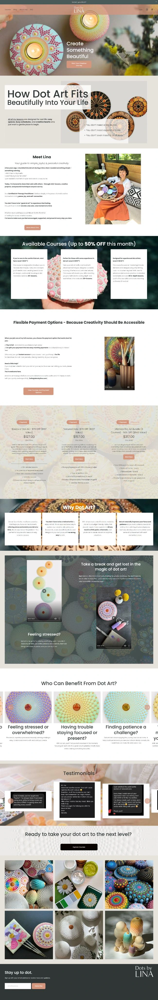
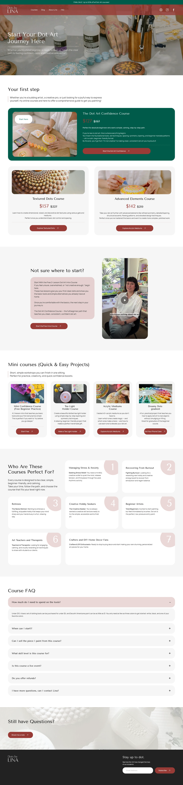

Dots by Lina: редизайн сайту, щоб курси продавалисьDots by Lina: a redesign built to sell the courses
Ліна — арт-терапевтка і авторка онлайн-курсів з дот-арту, розпису крапками. Старий сайт був гарним, але не вів до покупки: курси й ціни губились серед тексту, а людина не розуміла, з чого почати. Ми перебудували головну і сторінку курсів на платформі-конструкторі для онлайн-шкіл навколо одного шляху: від сумніву «я не вмію малювати» до кнопки «Почати курс».Lina is an art therapist who teaches dot art, painting with dots, through online courses. The old site looked nice but didn't lead to a purchase: courses and prices were lost among text, and visitors didn't know where to start. We rebuilt the homepage and courses page on an online-course website builder around one path: from "I can't draw" to the "Start the course" button.
Головна сторінкаHomepage

↕ Гортайте всередині вікон↕ Scroll inside the windows
Курси: зрозуміло, з чого початиCourses: clear where to start

Перший крок, безкоштовний вступний урок, міні-курси, для кого це і відповіді на сумніви — по порядку, як людина думає перед покупкою.First step, a free intro lesson, mini courses, who it's for and answers to doubts, in the order people think before buying.
ЗадачаThe brief
Мета — більше продажів курсів. На старій головній курси з'являлися лише в середині сторінки, ціни стояли на строкатому фоні і погано читались, а великі блоки тексту не відповідали на головне: «а в мене вийде?»The goal was more course sales. On the old homepage the courses only appeared halfway down, prices sat on a busy background and were hard to read, and long text blocks didn't answer the key question: "can I actually do this?"
Треба було зберегти теплий, спокійний настрій бренду, але перебудувати сайт так, щоб він продавав.We had to keep the brand's warm, calm mood but rebuild the site so it sells.
Що зробилиWhat we did
- 01Оффер на першому екрані.An offer on the first screen. «Turn daily stress into art meditation» замість загального «Create something beautiful»: продаємо не хобі, а спосіб розслабитись."Turn daily stress into art meditation" instead of a generic "Create something beautiful": selling calm, not a hobby.
- 02Робота із запереченнями.Handling objections. Блок «3 головні міфи»: не потрібен талант, дорогі матеріали і багато часу. Одразу знімаємо страх «я не вмію малювати».A "3 main myths" block: no talent, expensive supplies or lots of time needed. It removes the "I can't draw" fear up front.
- 03Довіра до авторки.Trust in the teacher. Історія Ліни, її сертифікація арт-терапевтки, відео з уроків і відгуки учениць.Lina's story, her art therapy certification, lesson videos and student reviews.
- 04Чіткі картки курсів.Clear course cards. Ціна, перекреслена стара ціна, що входить, оплата одним платежем або частинами і кнопка «Почати курс».Price, crossed-out old price, what's included, pay in full or in instalments, and a "Start course" button.
- 05Сторінка курсів як воронка.A courses page that works as a funnel. Головний курс для новачків першим, безкоштовний вступний урок для тих, хто вагається, міні-курси, 7 типів учениць і FAQ про матеріали, повернення та рівень.The main beginner course first, a free intro lesson for the undecided, mini courses, 7 student types and an FAQ on supplies, refunds and level.
РезультатResult
Після редизайну продажі курсів зрослиCourse sales went up after the redesign
Той самий теплий стиль, але тепер відвідувачка за один скрол дізнається, чому в неї вийде, кому довіряє і з якого курсу почати.The same warm style, but now a visitor learns in one scroll why she can do it, who she's trusting and which course to start with.